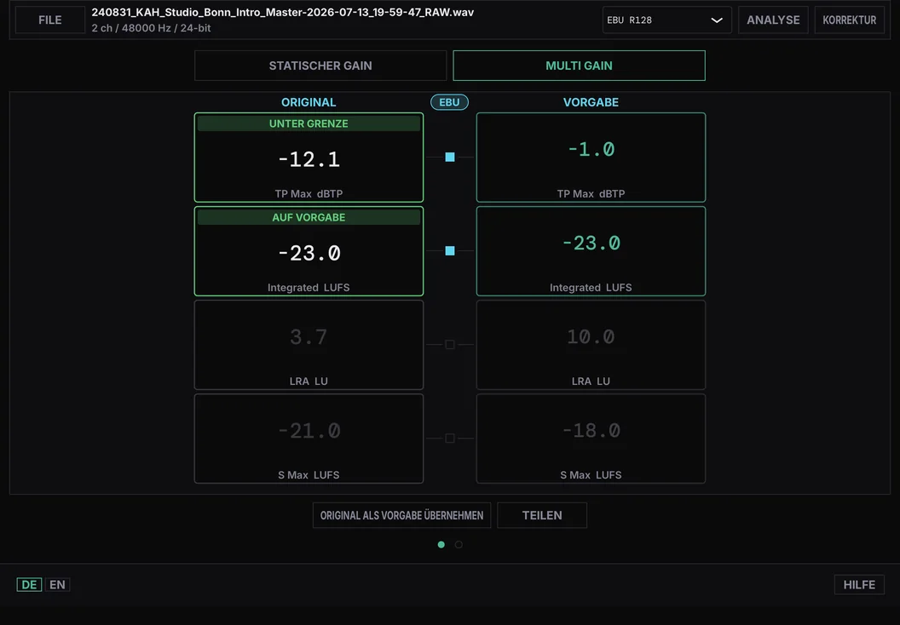

Offline-Lautheitskorrektur nach EBU R128 / ITU-R BS.1770-4. Datei droppen, Preset wählen, korrigieren. Two-Pass mit Verify-and-Refine: triff dein Target auf +/-0,1 LU, sauber gelimitet, ohne Re-Render-Hokuspokus.

loudness CORRECT ist die fokussierte Single-File-Lösung für normgerechte Lautheitskorrektur. Die DSP-Engine teilt sich loudness CORRECT mit dem pegelWERK loudness METER PRO, gleiche K-Weighting, gleicher Loudness-Meter, gleicher True-Peak-Detektor. Was du im Meter siehst, triffst du hier.
ITU-R BS.1770-4 K-Filter (Pre + RLB), 400-ms-Blöcke mit 75% Overlap, absolutes -70 LUFS und relatives -10 LU Gating. LUFS-I, LUFS-S Max, LUFS-M Max, LRA (EBU Tech 3342), alle Werte exakt nach Spec.
Identische Polyphase-Taps wie der TP-Detektor, was er misst, das limitiert er. 5 ms Lookahead, Dual-Time-Constant-Hüllkurve, 50 ms exponentielles Release. Saubere flache Limit-Kurven, kein Pumpen.
Linkwitz-Riley 4. Ordnung mit perfekter Rekonstruktion. Low <= 150 Hz, Mid 150-3000 Hz, High > 3000 Hz. Pro-Band Soft-Knee-Kompressor mit RMS-Hüllkurve. Bandspezifische Zeitkonstanten, bringt jede LRA in den Sendekorridor.
Pass 1 misst, Pass 2 korrigiert, dritter Pass verifiziert. Liegt der Residualwert über 0,1 LU, läuft der Korrektur-Pass automatisch noch einmal mit getrimmter Verstärkung. Ergebnis: dein Target auf +/-0,1 LU.
EBU R128, R128 S1 Kurzformat, ATSC A/85 (CALM), ARIB TR-B32, AGCOM, OP-59, DPP, Portaria 354, OTT -27 LUFS, Apple Podcasts, Spotify, Amazon Music, YouTube, plus Custom. Tolerance-Window pro Preset, Verify meldet PASS / FAIL.
Bis zu 16 Kanäle, vier Routing-Layouts (Auto/ITU, Film L-C-R, DTS, Raw/Stems). LFE BS.1770-konform mit Gewicht 0, Surrounds mit 1,41 in der Power-Domain, exakt nach Spec, ohne Eigeninterpretation.
Von EBU R128 bis OTT, von Apple Podcasts bis YouTube. Ein Klick, der Verify-Pass dokumentiert PASS / FAIL.
Drop, klick, fertig. Die Two-Pass-Pipeline arbeitet im Hintergrund, du bekommst eine korrigierte Datei und einen PDF-Bestätigungs-Report.
WAV, AIFF, FLAC, MP3. Mono bis 9.1.6, vier Routing-Layouts (ITU, Film, DTS, Raw). Auf macOS via File-Picker, auf iPad via Files-App / iCloud Drive.
Eines der 13 Delivery-Targets oder Custom mit eigenen LUFS/TP/LRA-Werten. LRA-Korrektur und TP-Limiter individuell zuschaltbar.
Pass 1 misst LUFS-I/S/M, LRA, TP. Pass 2 schreibt eine neue Datei mit statischem Gain optionaler LRA-Multiband-Korrektur TP-Limiter.
Output wird neu gemessen. Bei |Residual| > 0,1 LU läuft Pass 2 erneut. PDF-Report mit Source / Target / Result und PASS-Badge.
DSP-Parität zum pegelWERK loudness METER PRO, gleiche K-Weighting, gleicher Loudness-Meter, gleicher True-Peak-Detektor.
Echtzeit-Limiter müssen schätzen, loudness CORRECT misst die Datei zuerst, plant die Korrektur, schreibt sie sauber, misst nach und refined bei Abweichung. Genau so trifft man Targets exakt, statt sie ungefähr zu treffen. Dokumentiert via PDF-Report, abnahmesicher, reproduzierbar.